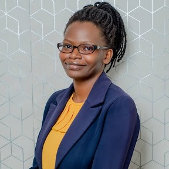

To deliver innovative and cost-effective engineering solutions that exceed our clients' expectations and build lasting relationships based on trust and quality workmanship
Vision
To be recognized as the most reliable and innovative engineering firm in the region, setting the standard for design, quality, and service.
Welcome to Ruach Engineering Consultants
Founded in 2025, Ruach Engineering Consultants combines innovation with practicality to deliver sustainable infrastructure solutions. Driven by a team of passionate engineers, we specialize in designing and managing projects that enhance communities while minimizing environmental impact. Our focus on cutting-edge technology and client collaboration ensures cost-effective, resilient, and timely project delivery for both public and private sectors.
We are a multidisciplinary design and build civil engineering company specializing in structural design,
construction management, and infrastructure development.
Meet Our Team

Kwagalakwe Deborah
Principal Civil Engineer
Specializing in structural analysis and bridge design, Sarah brings
15 years of technical and project leadership experience.
Eng. Daniel Rodriguez
Geotechnical Engineer
Daniel is known for his expertise in soil mechanics and foundation
engineering, ensuring safety from the ground up.
Eng. Maya Patel
Transportation Engineer
Maya leads roadway, traffic, and urban planning projects that support
efficient, future-ready mobility.